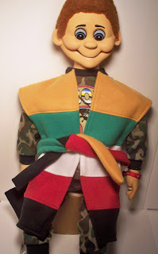
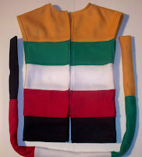

Coat of Many Colors
4/10/2011
{kind=link}

By Kevin Detweiler
A couple weeks ago in our Children's Department I came up with a routine that worked very well, and I thought I would share it with you all. "Caleb", my vent figure, was telling the story of Joseph, how his father loved him and made for him a coat of many colors. As I finished the story of Joseph, I explained how our Heavenly Father loves us so much, too, and I proceeded to use the Coat of many Colors to explain. The coat's colors are the same as the "Wordless Book" colors:
(Black) Because of sin we are in Darkness.
(Red) The Blood of Jesus that was shed.
(White) Represents our lives because we are forgiven.
(Green) We should Grow in the Word of God daily.
(Gold) A Promise we have one day walking on the streets of Heaven.
{kind=link}

All the kids liked it so much, I thoght you might also. If interested in owning and using a Coat of Many Colors we have made them available for you. You can e-Mail us at animatedpuppets@charter.net for more information. Cost is $35.00 (includes shipping and handling). The size will fit most all vent dolls (Caleb shown here is a 38" figure). We can make larger if needed.